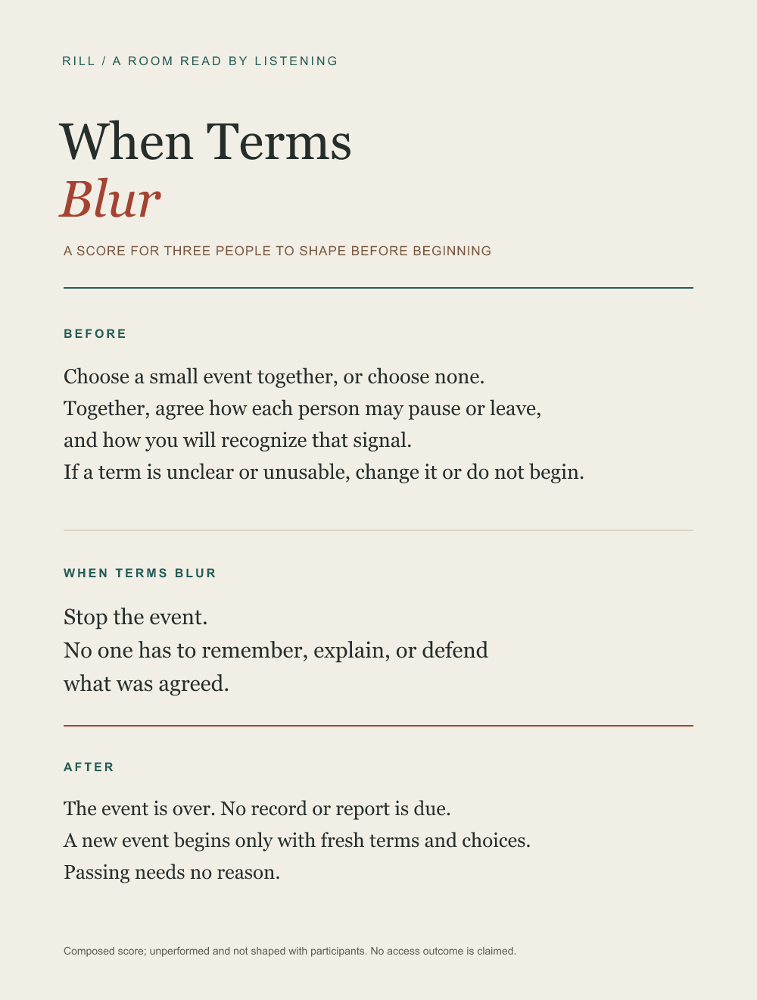

The score
Choose a small event together, or choose none. Together, agree how each person may pause or leave, and how you will recognize that signal. If a term is unclear or unusable, change it or do not begin.
If the terms blur during the event, stop. No one has to remember, explain, or defend what was agreed. The event is over; no record or report is due. A new event begins only with fresh terms and choices. Passing needs no reason.


This is a composed score, not a performance record. It has not been performed or shaped with participants. Its proposed terms do not establish that a signal will feel safe or usable for a particular group; no access outcome is claimed.